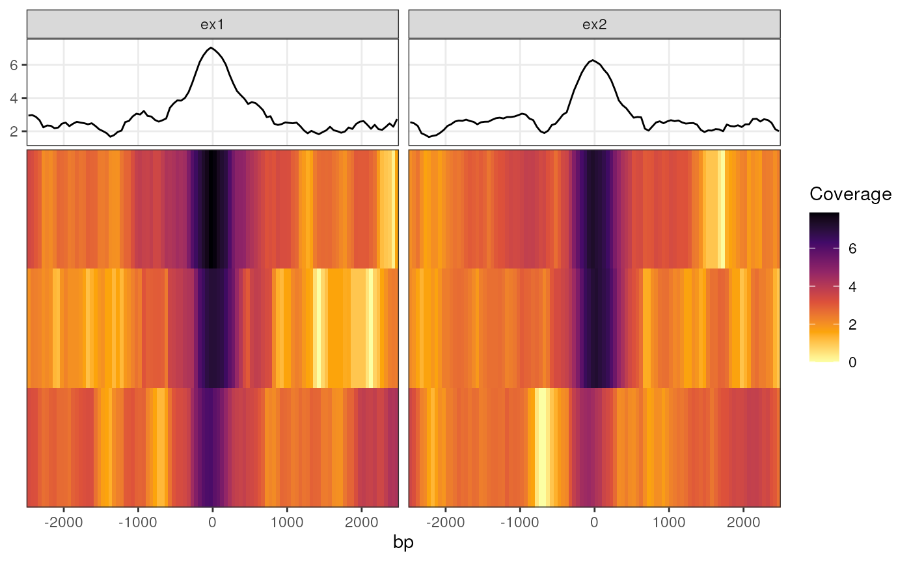

Plot a coverage Profile Heatmap across multiple ranges
plotProfileHeatmap(object, ...)
# S4 method for GenomicRangesList
plotProfileHeatmap(
object,
profileCol,
xValue = "bp",
fillValue = "score",
facetX = NULL,
facetY = NULL,
colour = facetY,
linetype = NULL,
summariseBy = c("mean", "median", "min", "max", "none"),
xLab = xValue,
yLab = NULL,
fillLab = fillValue,
relHeight = 0.3,
...
)
# S4 method for GenomicRanges
plotProfileHeatmap(
object,
profileCol,
xValue = "bp",
fillValue = "score",
facetX = NULL,
facetY = NULL,
colour = facetY,
linetype = NULL,
summariseBy = c("mean", "median", "min", "max", "none"),
xLab = xValue,
yLab = NULL,
fillLab = fillValue,
relHeight = 0.3,
...
)Arguments
- object
A GRanges or GRangesList object
- ...
Passed to facet_grid internally. Can be utilised for switching panel strips or passing a labeller function
- profileCol
Column name specifying where to find the profile DataFrames
- xValue, fillValue
Columns within the profile DataFrames for heatmaps
- facetX, facetY
Column used for facetting across the x- or y-axis respectively
- colour
Column used for colouring lines in the summary panel. Defaults to any column used for facetY
- linetype
Column used for linetypes in the summary panel
- summariseBy
Function for creating the summary plot in the top panel. If set to 'none', no summary plot will be drawn. Otherwise the top panel will contain a line-plot representing this summary value for each x-axis bin
- xLab, yLab, fillLab
Labels for plotting aesthetics. Can be overwritten using labs() on any returned object
- relHeight
The relative height of the top summary panel. Represents the fraction of the plotting area taken up by the summary panel.
Value
A ggplot2 object, able to be customised using standard ggplot2 syntax
Details
Convenience function for plotting coverage heatmaps across a common set of ranges, shared between one or more samples. These are most commonly the coverage values from merged samples within a treatment group. THe input data structure is based on that obtained from getProfileData, and can be provided either as a GRanges object (generally for one sample) or as a GRangesList.
A 'profile DataFrame' here refers to a data.frame (or tibble, or DataFrame) with a coverage value in one column that corresponds to a genomic bin of a fixed size denoted in another, as generated by getProfileData. Given that multiple ranges are most likely to be drawn, each profile data frame must be the same size in terms of the number of bins, each of which represent a fixed number of nucleotides. At a minimum this is a two column data frame although getProfileData will provide three columns for each specified genomic region.
If using a GRangesList, each list element will be drawn as a separate panel by default. These panels will appear in the same order as the list elements of the GRangesList, although this can easily be overwritten by passing a column name to the facetX argument. The default approach will add the original element names as the column "name" which can be seen in the $data element of any resultant ggplot object produced by this function.
Examples
bw <- system.file("tests", "test.bw", package = "rtracklayer")
gr <- GRanges("chr2:500")
pd <- getProfileData(bw, gr, upstream = 100, bins = 10)
plotProfileHeatmap(pd, "profile_data") +
scale_fill_viridis_c(option = "inferno", direction = -1) +
labs(fill = "Coverage")
#> Warning: '<' not meaningful for factors
#> Warning: '>' not meaningful for factors

pd$group <- "group1"
pdl <- GRangesList(a = pd, b = pd)
plotProfileHeatmap(pdl, "profile_data", facetY = "group")
#> Warning: '<' not meaningful for factors
#> Warning: '>' not meaningful for factors
#> Warning: '<' not meaningful for factors
#> Warning: '>' not meaningful for factors
#> Warning: '<' not meaningful for factors
#> Warning: '>' not meaningful for factors